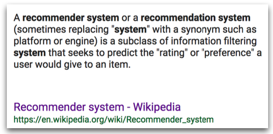

13.1. Introduction
In today’s lecture, we’re going to delve into the world of recommender systems. Let’s start with its definition, which you might find on Wikipedia. Whether you call it a recommender system, a recommendation system, a recommender engine, or a recommendation platform, the core function remains consistent: to filter vast amounts of information and present users with options that align with their preferences.
{kind=link}
We live in an age where recommender systems are woven into the fabric of our digital experiences. Visit any e-commerce site—Amazon, Wayfair, Walmart—and you’ll encounter product suggestions tailored to your interests. This extends to entertainment and social platforms as well: Netflix curates our watchlists, YouTube and Google News personalize our feeds, Pinterest enhances our visual discoveries, Spotify selects music for our tastes, Facebook suggests friends, LinkedIn connects us with professional contacts. And let’s not overlook the world of online dating, with platforms like OkCupid, which leverages these systems to suggest potential romantic matches.
The essence of a recommender system is its ability to provide automated recommendations for items or products that users are likely to be interested in. This is achieved by leveraging historical data—a key element of these systems.
Now, let’s consider the construction of a recommender system. Historically, we’ve seen non-personalized recommender systems, such as generic top-five lists—for instance, “Top Five Winter Boots for Women” or “Best Cyber Monday Deals.” These recommendations were grounded in either expert knowledge or simple aggregated statistics like best-selling books. The obvious limitation here is the lack of personalization.
The goal, then, is to develop personalized recommender systems. We will explore fundamental techniques such as
content-based methods,
collaborative filtering,
latent factor models.
These methods are categorized based on the type of information they utilize: content-based methods focus on item attributes, while collaborative filtering and latent factor models analyze user-item interaction data.
As we’ll see, a single method is rarely sufficient; thus, hybrid systems, which integrate multiple approaches, have become the norm. The prominence of such advanced systems can be traced back to the Netflix Prize competition, which significantly contributed to the field before Netflix transitioned to streaming services.
Nowadays, with streaming, Netflix and similar platforms have access to richer user interaction data: when you start or stop watching a show, whether you resume it, your engagement with recommended content, etc. This wealth of data has led to the integration of numerous recommender systems, enhancing the personalization of content.
Furthermore, I will touch on the cutting-edge developments in recommender systems, many of which employ deep learning and neural networks. These sophisticated models represent the state-of-the-art in recommendation technology.